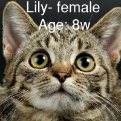
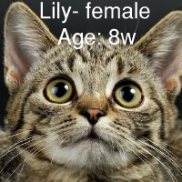
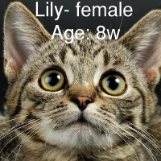

Our Cats ♥
Please note, some cats come in bonded pairs and we require them to be adopted together. Each bonded pair will have a star on their icon with matching colors. Our adoption fees are dependant on age, and sometimes breed.
Kittens aged under 6mo - $150
Adults aged 7mo - 2y - $125.
Cats 3y or older - $100.
Requirements before adopting:
- Valid form of photo identification
- If you have other cats: Proof of FEL/FIV combo test, current FVRPC & Rabies vaccination, and your veternarian's phone number.
- Three phone numbers for references, please notify them that we will reach out to them.
- A cat carrier. If you don't have one, you may purchase one from us.
You must be aged 18 years or older and have a valid photo ID to proove such. If you have other cats, they must be spayed/neutered and be properly vaccinated.
Once the adoption form is filled and reviewed, the cat will be put on hold and a home visit will be conducted. We also ask to bring any other dogs or cats
and children to have a famil meet & greet. We have the facility to do so safely!
If you know which cat you wish to adopt, please write their name in the comment section
of our booking form!
 


- Valid form of photo identification
- If you have other cats: Proof of FEL/FIV combo test, current FVRPC & Rabies vaccination, and your veternarian's phone number.
- Three phone numbers for references, please notify them that we will reach out to them.
- A cat carrier. If you don't have one, you may purchase one from us.
You must be aged 18 years or older and have a valid photo ID to proove such. If you have other cats, they must be spayed/neutered and be properly vaccinated.
Once the adoption form is filled and reviewed, the cat will be put on hold and a home visit will be conducted. We also ask to bring any other dogs or cats
and children to have a famil meet & greet. We have the facility to do so safely!
If you know which cat you wish to adopt, please write their name in the comment section
of our booking form!

 Location & Hours
Location & Hours